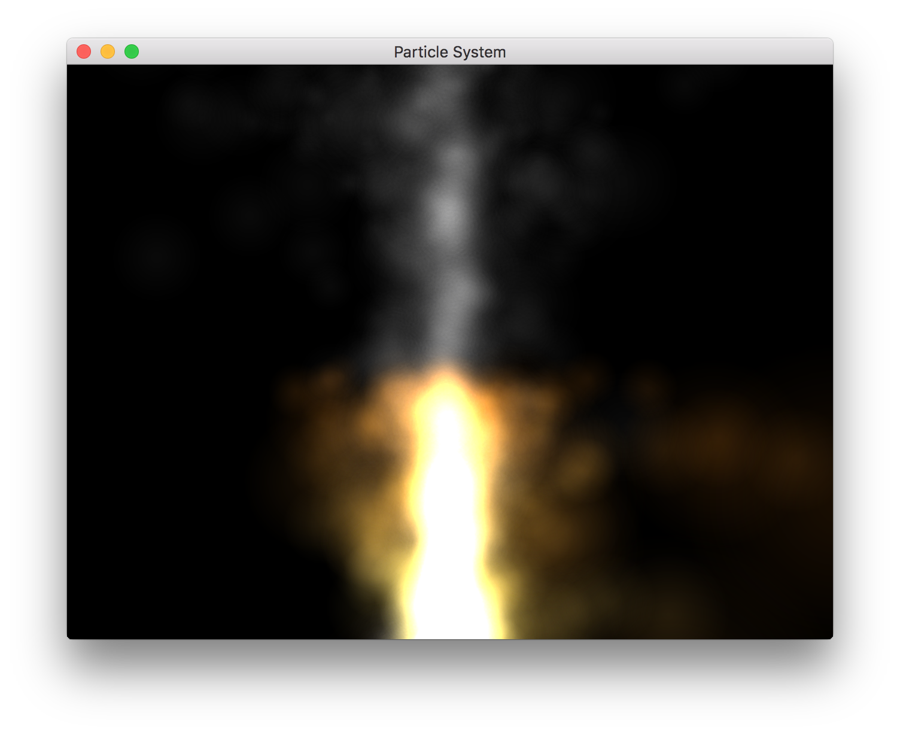
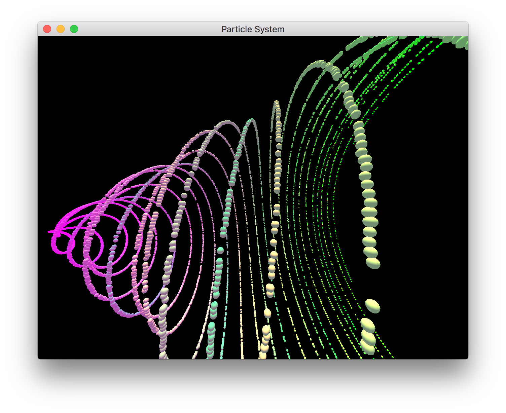
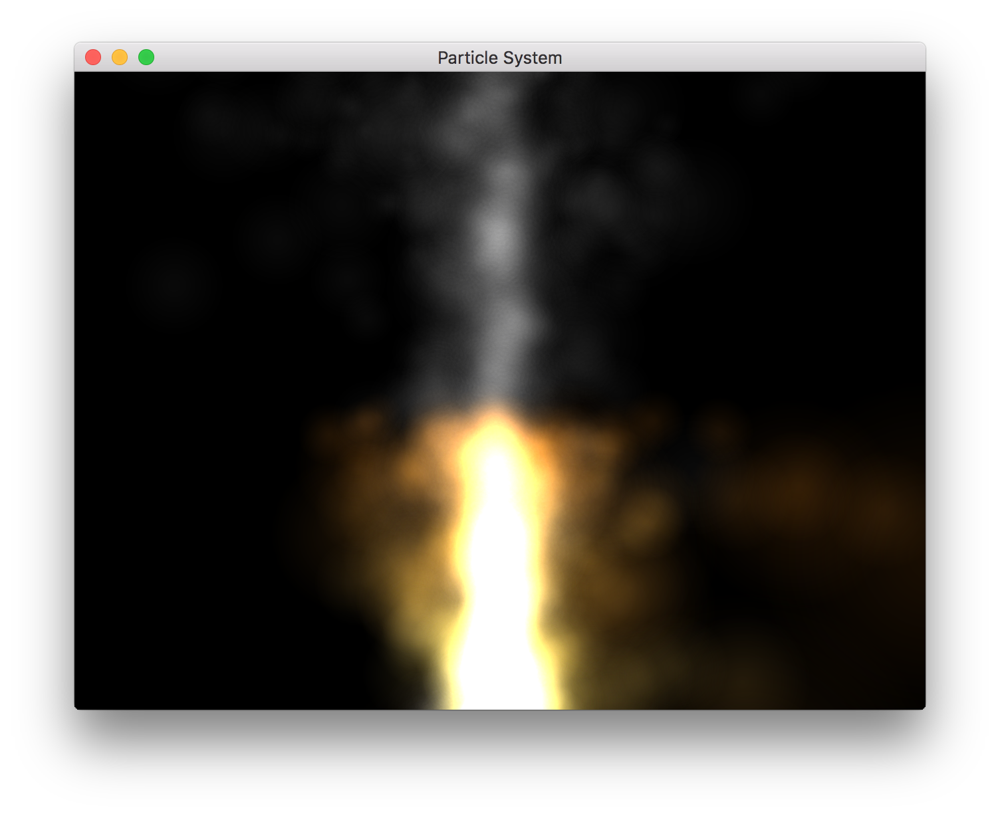
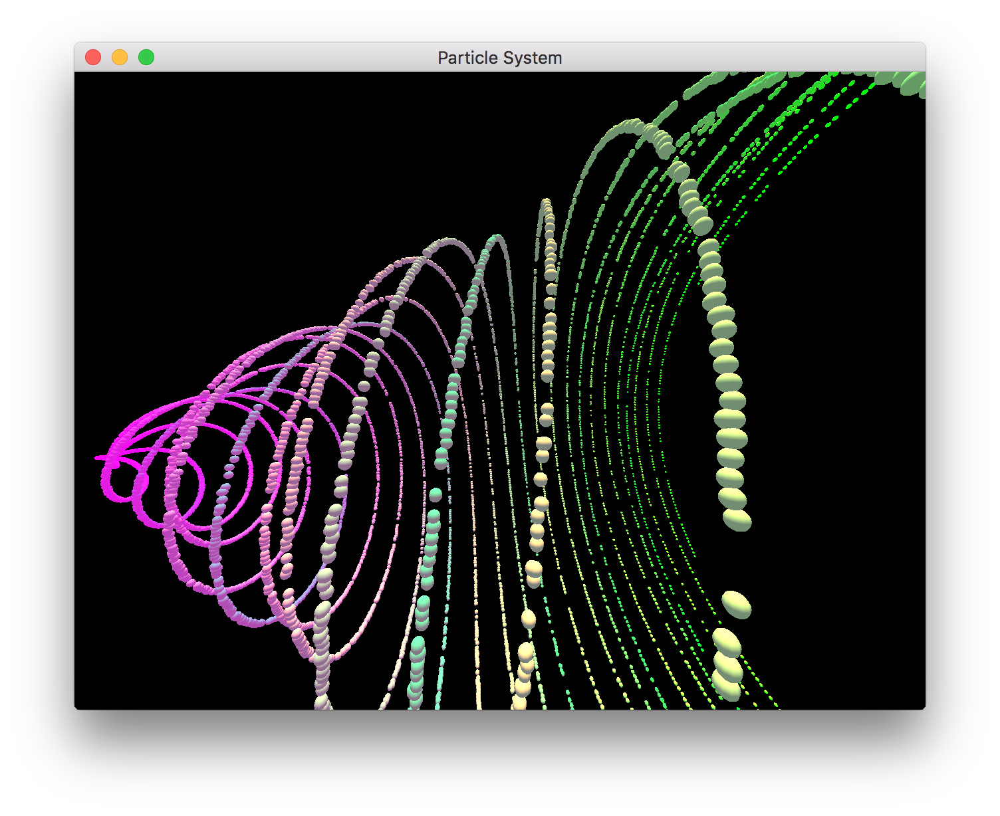

The controls for the application are as follows:
| [1] | Show/Restart the Bouncing Ball Simulation |
| [2] | Show/Restart the Water Spout Simulation |
| [3] | Show/Restart the Fire/Smoke Simulation |
| [4] | Show/Restart the magic Spiral Simulation |
| [5] | Show/Restart the Magic Simulation |
| [+/-] | Allow the camera to be moved in and out of the screen |
| [Arrow Keys] | Allow the camera to be moved vertical and horizontally |
| [r] | Resets the camera to the default location |
| [space] | Pause/resume the simulation |
| [`] | Prints the instantaneous FPS |
| Clicking and dragging the screen will rotate the camera. |
A simple demo showing a bouncing ball can be seen below. The ball has Per-Pixel lighting and the floor is textured. Both of these features were used to implement some of the other features seen in the particle systems.
Below is a demo showing some the camera controls available to the user.
The water spout simulation not only has per-pixel light, bouncing particles, but it also has thousands of particles. I used instancing in order to increase the number of particles. Originally, the simulation would max out at around 1000 particles, but now the system is able to handle over 25,000 particles.
The fire contains translucent and textured particles which subtly change color over time. And with some added variability in the motion of the particles, it produces a compelling effect. In addition, I added a separate smoke simulation which also contains translucent, textured particles. It works nicely with the fire simulation to create a fairly convincing simulation.
Next the "magic spiral", was my first attempt at a magic particle system. The particles change color over time and have some interesting motion. I find it fun to watch, so I included it in my demo.
Last the magic simulation is similar to the fire simulation. However, the particles radiate from the center instead of flowing upwards. In addition, the color of the particles change over time. I find it interesting to watch.
After examining the FPS, the simulations do run in realtime. The frame rate remains around 60FPS. It would occasionally dip to something a little lower, but then bounce back to the 60FPS.
Lastly, for the art contest, I have included several submissions. Most of them are screen shots of the particle systems that I think are interesting. There are also a couple of pictures are a "magic fire" simulation which I have no longer included in the project.

 





Finally, there was a bug that appeared in one of the particle systems. I'm not really sure how it happened, but it's a little interesting to watch.
I used this tutorial in order to setup OpenGL with SDL. Much of the OpenGL boiler plate was adapted from the Apple's OpenGL sample project. The math library that I developed uses much of the code provided in this sample project.
Also I found the texture I am using for the wood texture here.
The only two frameworks that I use in this project at SDL and SDL_Image (in order to load the textures). I coded everything else. This includes the scene graph, tessellation of various primitives, as well as wrappers classes for OpenGL. I may have gone a little over kill with my implementation, since it has over 2700 line of code (the goal being I can reuse some of this in later assignments/projects).
{kind=link}